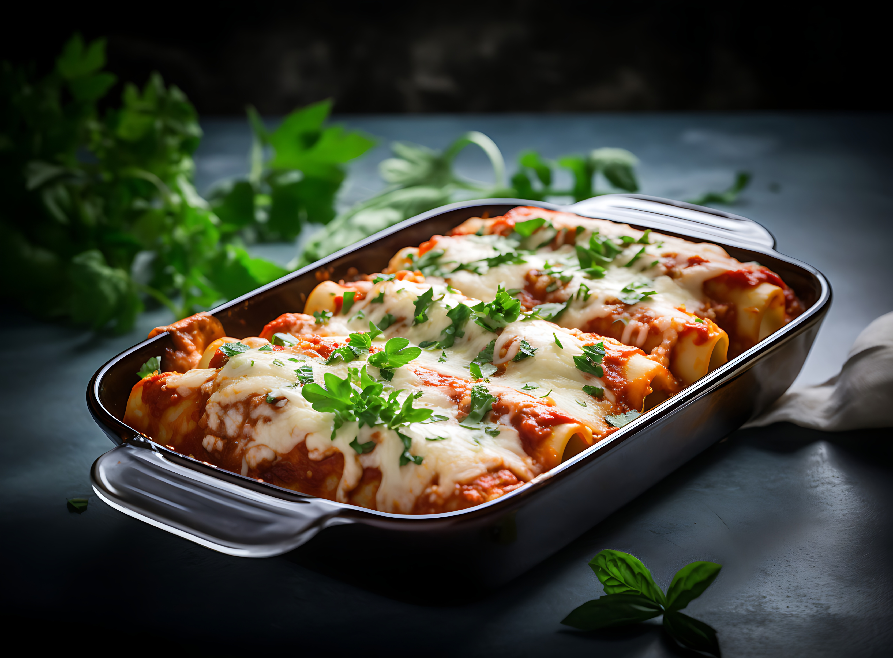

Lasagna

Description
Lasagna is a classic Italian dish that consists of layers of pasta, meat sauce, and cheese. It is a hearty and comforting meal that is perfect for family gatherings or special occasions. The combination of flavors from the rich meat sauce, creamy cheese, and tender pasta makes lasagna a beloved dish around the world.
Ingredients
- 1 lb ground beef
- 1 onion, chopped
- 2 cloves garlic, minced
- 1 can (15 oz) tomato sauce
- 1 can (6 oz) tomato paste
- 1 tsp dried basil
- 1 tsp dried oregano
- 1/2 tsp salt
- 1/4 tsp black pepper
Instructions
- In a large skillet, brown the ground beef over medium heat.
- Remove the beef from the skillet and set aside.
- In the same skillet, sauté the chopped onion until translucent.
- Add the minced garlic and cook for another minute.
- Stir in the tomato sauce and tomato paste.
- Add the dried basil, dried oregano, salt, and black pepper.
- Return the browned beef to the skillet and simmer for 20 minutes.
Back to Home